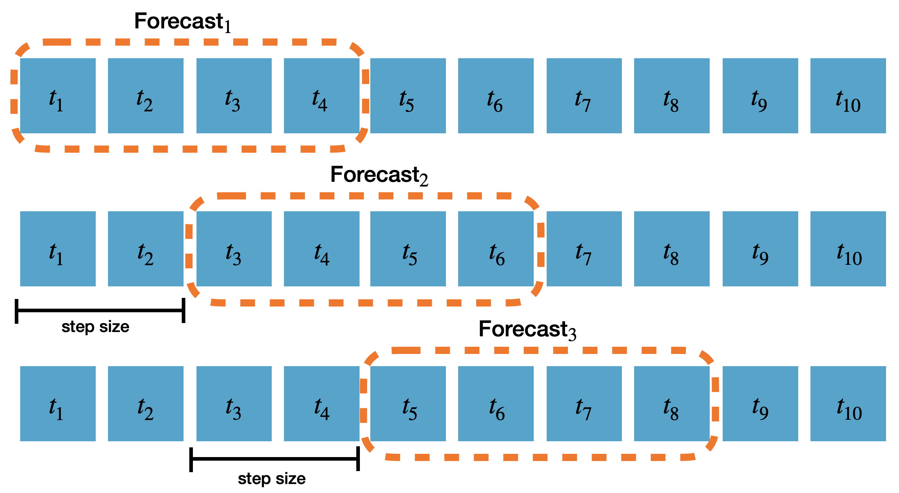

!pip install neuralforecastPredict Insample
Tutorial on how to produce insample predictions.
This tutorial provides and example on how to use the predict_insample function of the core class to produce forecasts of the train and validation sets. In this example we will train the NHITS model on the AirPassengers data, and show how to recover the insample predictions after model is fitted.
Predict Insample: The process of producing forecasts of the train and validation sets.
Use Cases: * Debugging: producing insample predictions is useful for debugging purposes. For example, to check if the model is able to fit the train set. * Training convergence: check if the the model has converged. * Anomaly detection: insample predictions can be used to detect anomalous behavior in the train set (e.g. outliers). (Note: if a model is too flexible it might be able to perfectly forecast outliers)
You can run these experiments using GPU with Google Colab.

1. Installing NeuralForecast
2. Loading AirPassengers Data
The core.NeuralForecast class contains shared, fit, predict and other methods that take as inputs pandas DataFrames with columns ['unique_id', 'ds', 'y'], where unique_id identifies individual time series from the dataset, ds is the date, and y is the target variable.
In this example dataset consists of a set of a single series, but you can easily fit your model to larger datasets in long format.
from neuralforecast.utils import AirPassengersDFY_df = AirPassengersDF # Defined in neuralforecast.utils
Y_df.head()| unique_id | ds | y | |
|---|---|---|---|
| 0 | 1.0 | 1949-01-31 | 112.0 |
| 1 | 1.0 | 1949-02-28 | 118.0 |
| 2 | 1.0 | 1949-03-31 | 132.0 |
| 3 | 1.0 | 1949-04-30 | 129.0 |
| 4 | 1.0 | 1949-05-31 | 121.0 |
3. Model Training
First, we train the NHITS models on the AirPassengers data. We will use the fit method of the core class to train the models.
import pandas as pd
from neuralforecast import NeuralForecast
from neuralforecast.models import NHITShorizon = 12
# Try different hyperparmeters to improve accuracy.
models = [NHITS(h=horizon, # Forecast horizon
input_size=2 * horizon, # Length of input sequence
max_steps=1000, # Number of steps to train
n_freq_downsample=[2, 1, 1], # Downsampling factors for each stack output
mlp_units = 3 * [[1024, 1024]]) # Number of units in each block.
]
nf = NeuralForecast(models=models, freq='M')
nf.fit(df=Y_df, val_size=horizon)4. Predict Insample
Using the NeuralForecast.predict_insample method you can obtain the forecasts for the train and validation sets after the models are fitted. The function will always take the last dataset used for training in either the fit or cross_validation methods.
With the step_size parameter you can specify the step size between consecutive windows to produce the forecasts. In this example we will set step_size=horizon to produce non-overlapping forecasts.
The following diagram shows how the forecasts are produced based on the step_size parameter and h (horizon) of the model. In the diagram we set step_size=2 and h=4.

Y_hat_insample = nf.predict_insample(step_size=horizon)Predicting DataLoader 0: 100%|██████████| 1/1 [00:00<00:00, 37.76it/s]The predict_insample function returns a pandas DataFrame with the following columns: * unique_id: the unique identifier of the time series. * ds: the datestamp of the forecast for each row. * cutoff: the datestamp at which the forecast was made. * y: the actual value of the target variable. * model_name: the forecasted values for the models. In this case, NHITS.
Y_hat_insample.head()| unique_id | ds | cutoff | NHITS | y | |
|---|---|---|---|---|---|
| 0 | 1.0 | 1949-01-31 | 1948-12-31 | 0.204289 | 112.0 |
| 1 | 1.0 | 1949-02-28 | 1948-12-31 | 0.302111 | 118.0 |
| 2 | 1.0 | 1949-03-31 | 1948-12-31 | 0.399522 | 132.0 |
| 3 | 1.0 | 1949-04-30 | 1948-12-31 | 0.429369 | 129.0 |
| 4 | 1.0 | 1949-05-31 | 1948-12-31 | 0.518200 | 121.0 |
Important
The function will produce forecasts from the first timestamp of the time series. For these initial timestamps, the forecasts might not be accurate given that models have very limited input information to produce forecasts.
5. Plot Predictions
Finally, we plot the forecasts for the train and validation sets.
import matplotlib.pyplot as pltplt.figure(figsize=(10, 5))
plt.plot(Y_hat_insample['ds'], Y_hat_insample['y'], label='True')
plt.plot(Y_hat_insample['ds'], Y_hat_insample['NHITS'], label='Forecast')
plt.axvline(Y_hat_insample['ds'].iloc[-12], color='black', linestyle='--', label='Train-Test Split')
plt.xlabel('Timestamp [t]')
plt.ylabel('Monthly Passengers')
plt.grid()
plt.legend()<matplotlib.legend.Legend>
Important
Note how the forecasts for the train set are very accurate, while the forecast in the validation set (last 12 timetamps), are less precise. This is because the model was trained on the train set, and deep learning models such as the NHITS can easily overfit the train set.
References
Give us a ⭐ on Github